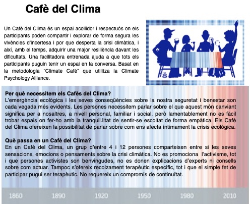

Tallers, grups i espais de reflexió per a famílies, professionals i persones interessades.
Espai per compartir les emocions que genera la problemàtica del canvi climàtic (ecoansietat), elaborar-les conjuntament i afavorir processos de consciència i acció transformadora.


Espai de supervisió i suport orientat a l'autocura de professionals i persones que treballen en relació d'ajuda.